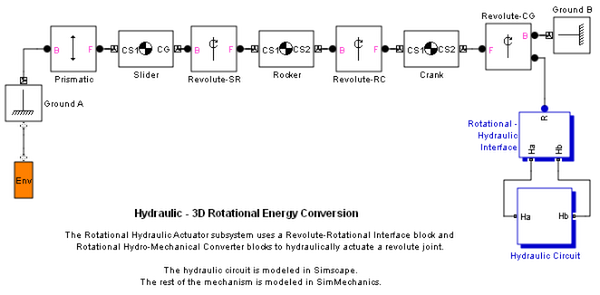
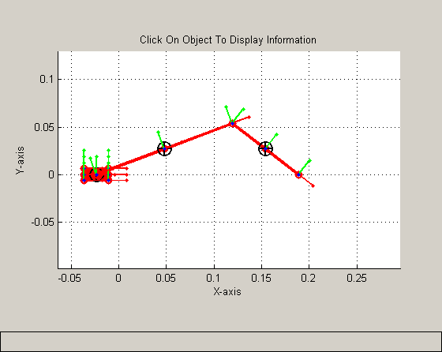

Hydraulic - 3D Rotational Energy Conversion
The Rotational Hydraulic Actuator subsystem uses a Revolute-Rotational Interface block and Rotational Hydro-Mechanical Converter blocks to hydraulically actuate a revolute joint.
The hydraulic circuit is modeled in Simscape. The rest of the mechanism is modeled in SimMechanics.
 